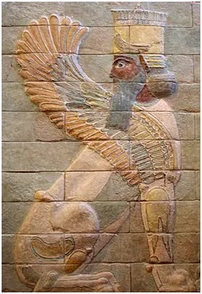
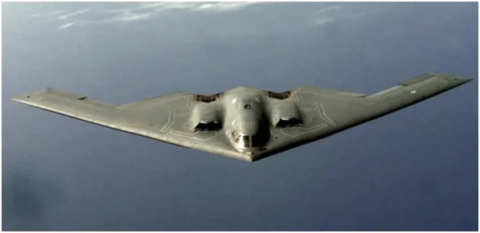

Prawda na wojnie nie musi ginąć.
Media, głównie te pisowskie, łżą, jak kiedyś w tych tematach „gwiazda śmierci”. Jeśli ktoś miał jakieś złudzenia co do PiS-u, niech poczyta ich media w tej sprawie. Przypomnijmy sekwencję zdarzeń w tej krótkiej wojnie i odkłammy historię.
Izrael atakuje rakietami Iran, ten odpowiada, trwa to naprzemiennie ponad tydzień. W Izraelu są poważne zniszczenia, w Iranie też. Rakiety Izraela i jego lotnictwo nie są w stanie skruszyć podziemnych, perskich instalacji. Nagle w nocy USA przy pomocy swoich wielkich bombowców zrzucają potężne bomby do kruszenia takich schronów. Inspektorzy zachodniej agencji raportują, że nie ma żadnych odczytów o skażeniu, czyli nie trafiono w zasoby uranu. Iran szybko odpowiada i ostrzeliwuje bazę USA w Katarze; straty są małe, bo USA usunęły z regionu nie tylko lotniskowiec, ale i samoloty.

Trump proponuje dziwne zawieszenie broni między Iranem a Izraelem: Iran ma przestać natychmiast, a Izrael może strzelać jeszcze przez 12 godzin. Na taką propozycję Iran odpowiada dużą salwą rakiet na Izrael. Po tej salwie Izrael, bez odpowiedzi zbrojnej, ogłasza, że przyjmuje propozycję Trumpa od zaraz. Iran oświadcza, że warunkowo wstrzymuje ogień, ale tylko do chwili ewentualnego ponownego ataku na swój kraj skądkolwiek by nie nastąpił.
Relacja oparta o media z Azji, głownie tureckie.
O tym więcej mówię w tym filmie: https://banbye.com/watch/v_QMWix94gyGjT
Grafika: Perski sfinks z pałacu w Suzie stworzony 3000 lat temu.
Paweł Klimczewski